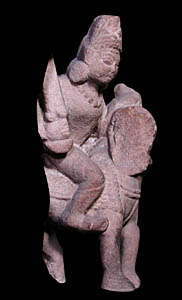

KalkiThe tenth incarnation of Vishnu has not yet appeared. However, when it comes it will appear as a white horse carrying Vishnu himself. 
Vishnu will come to the earth riding on Kalki when the balance of good and evil has been completely disrupted. He will then destroy all evil in the world and the next age will begin. |